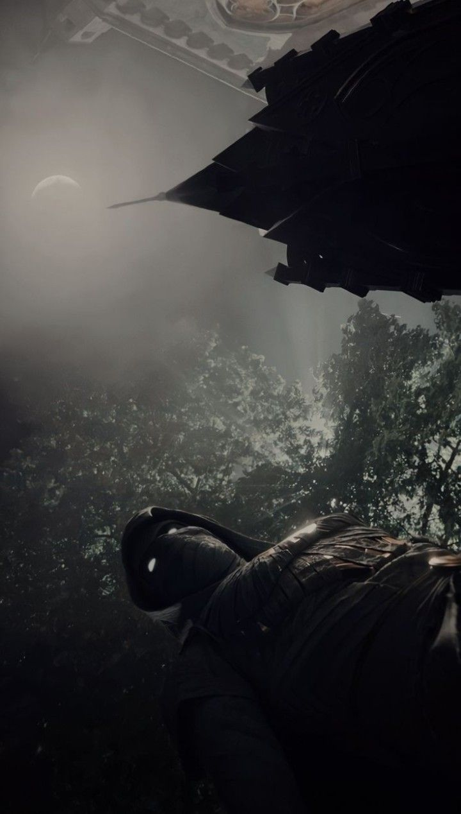

Seu recadinho:
Meu "otaku" preferido. Uma das pessoas mais engraçadas e divertidas que ja conheci, aquele tipo de pessoa que mesmo nos seus piores dias vai se esforçar para te tirar um sorriso. Não consegue ficar mais de um dia com a mesma foto de perfil e eh muito bom de puxar assunto, prazer de ser seu amigo!
